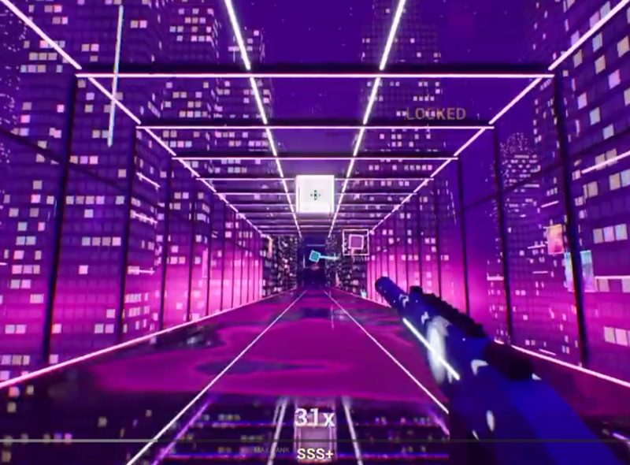

Click CONTINUE again to take the mouse back.
Target size and double / triple boxes change from the next run.
Astral Web (alpha demo): a small browser version of the Unreal Engine game.
Astral Web is a functional, simplified web preview of the game.
For the full features and the best experience, check out the full game, AstralR1, on desktop.

Loading...